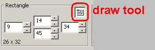

Region Records
Description
The purpose of the Region records is to describe named rectangular areas on a poker table, each of which contains an element of the game state. These regions will “return” values to the OpenHoldem game state engine, depending on the type of transform selected.
An example will make this clearer. Each seat at the table will have two cards in front it, and we want our screen scraper to tell the OpenHoldem game state engine what those cards are. If the casino client displays a group of pixels for our first hole card, that to a human being looks like an ace of hearts, we need somehow to tell the screen scraper to “return” “Ah” to the game state engine each time that group of pixels is seen in one of the card locations. To do this we collect an image for that ace of hearts, then setup a region record that returns “Ah” to OpenHoldem when that ace of hearts is seen during real live game play.
Manipulating region records using OpenScrape
To create a new region record, select the “Regions” category in the record tree display on the Table Map Editor window, and click the “New” button. A window will be displayed that allows you to select the name of the region to create. After creating the record, you can use the controls on the right side of the Table Map Editor window, as described below, to change the settings for the new record. To edit an existing region record, select the record in the record tree display on the Table Map Editor window. Immediately after selecting the record, the controls on the right side of the Table Map Editor window are updated with the settings for the selected region record. These can then be changed, as described below. To delete an existing region record, select the record in the record tree display on the Table Map Editor window, and click the “Delete” button. A window will be displayed asking for verification of this action.
Note: The Insert and Delete keys can also be used as a shortcut for adding and deleting Region records.
Note: Regions can also be selected by left clicking within the region’s flashing red rectangle that is layered on top of the poker table image on the Main window. If multiple regions are layered on top of each other, clicking again on the same area will select the next region below the selected region. This only works for two regions. If three or more regions are layered on top of each other, the selection tree will need to be used.
The majority of the right side of the Table Map Editor window is used to manipulate the parameters of the region record.

Starting at the top, there is a rectangle group box. This group box allows you to define the extents (left, right, top, bottom) of the region record’s bounding rectangle. The bounds are inclusive – in other words, a rectangle defined as left=0, right=5, top=0 and bottom=6 will be 6 pixels wide and 7 pixels high. The rectangle settings can be direct entered into the controls, you can use the spinners next to the controls, or you can use the rectangle drawing tool to quickly draw the rectangle on the poker table.
To use the rectangle drawing tool, click once on this control:

...then move your mouse cursor to the Main OpenScrape window where the image of the poker table is displayed. The mouse cursor will change to look like crosshairs with an arrow pointing right and down. Left click and hold the mouse button anywhere on the poker table image to define the left-top corner of the rectangle. Drag to the right and down, and when you reach the right-bottom corner of the rectangle, release the left mouse button.
A zoomed view of the region is displayed in the box at the bottom right of the Table Map Editor window. The Table Map Editor window can be enlarged, if needed, to show the entire region. Use the Zoom Level control to adjust the zoom level in this display.

To the right of the rectangle group box is the nudge group box. These controls allow you to adjust the size and position of the region record’s rectangle in a variety of ways. The group of six controls on the left, starting from top left and moving clockwise, allow you to make the rectangle taller, shorter, thinner, smaller, bigger and wider. The group of 8 controls on the right, starting from top left and moving clockwise, allow you to move the rectangle up-left, up, up-right, right, down-right, down, down-left, and left.
Note: Regions can also be moved by first selecting the region by left clicking within the region’s flashing red rectangle on the poker table image on the Main window, then by holding the Shift key and dragging and dropping the region to its new location.
Keyboard shortcuts to move and resize regions
- Arrow keys - Move the region 1 pixel
- Numpad keys 1, 3, 7, and 9 – Move the region diagonally 1 pixel
- Shift + Arrow keys - Move the region 5 pixels
- Control + Arrow keys - Resize the region by 1 pixel
- Control + Shift + Arrow keys – Resize the region by 5 pixels

The next set of controls allows you to set the remainder of the parameters on a region record. Here you can set the type of transform, the radius of the RGB color cube, and the center color of the RGB color cube. The use of RGB color cubes for transforms of type Color and Text is described in the technical reference below. Also in this group of controls is an eyedropper button that is used to populate the color parameters, as opposed to directly entering those values. To use the eyedropper, click once on the eyedropper button, then hover over the region’s image display at the bottom of the Table Map Editor window. When the color you want is present in the four color fields, click the left mouse button to lock them in.
As a helpful reference, the “Avg Color” fields are populated with the calculated average color of all pixels in the region. This is useful for finding RGB color cube centers and for text transform separations.

This field provides an instant preview of the results of combining the current pixels in the region with the current transform for that region. If this is a Text transform, the actual transformed ASCII text is displayed. If this is a Color transform, True or False is displayed, depending if the region’s average color is inside or outside of the defined RGB color cube. If this is a Hash transform, the value of the matching Hash record is displayed. If this is an Image transform, the value of the matching Image record is displayed.
If your region is defined to have a Text transform, then the Pixel Separation window will be populated with a preview of this separation. The key to good Text transformation is the separation of foreground pixel colors from background pixel colors. In this display, foreground pixels will be shown as an “X”, and background pixels as a blank space. The size of the font used in this display can be adjusted with the “+” and “-“ buttons to the right.
Note: Remember that the whole purpose of a region definition, with a given type of transformation, is to tell the screen scraper what the pixels mean that are displayed on the screen within that region. The return value of the transformation is provided to the OpenHoldem game state engine which then uses those values to establish the game state and to provide various information that your bot logic needs to make action decisions. A human can easily look at the balance for seat #2 and see that it is $950.12. For a computer it is harder – we need to specify the rectangle that bounds this balance region, define it as a text transform, choose a color that lets the screen scraper identify foreground from background pixels, and then collect each of the individual font characters (more on this below) so that the screen scraper engine can look up the actual ASCII text for these pixels.
The Edit menu of on the Main window contains a “Duplicate Region” entry, which is intended to allow the quick creation of related region records. First, select a region record from the tree display on the Table Map Editor window, then select Edit/Duplicate Region from the Main window. This action will display this window: In this case, the p0balance region was selected. You are given the option to duplicate the selected region record to other region records of the same type. In this case, all of the unpopulated pXbalance and uXbalance region records are candidates. You can select one or more than one destination record here (using the standard Windows Ctrl and Shift multi-select capability) to copy the selected region to. When you click the OK button, the new region records will be created for you, and you can then move them where needed and adjust them appropriately.
Technical Reference
In the Table Map (.tm) file, these records will be preceded with the characters "r$". Region records have the following format:
r$<name> <left> <top> <right> <bottom> <color> <radius> <transform>
<name> is the name of the record (see table below) <left>, <top>, <right> and <bottom> are integer values within the casino table, where the upper left corner of the client area is considered to be 0, 0 <color> is a 1-8 character hexadecimal number in the form AABBGGRR (Microsoft Window’s COLORREF format (!!!)). The usage of the color value is dependent on the transform selected. <radius> is an RGB color distance. <transform> describes the engine algorithm that should be used to interpret the pixels in the region.
Valid Transforms And Their Desciption
| Transform | Description |
| N (none) | This is used for those regions that do not need a transform as their only purpose is to describe a rectangle for use by the scraper engine. An example is button location (i0button - i9button) which informs the Autoplayer engine of the allowed rectangle for mouse clicks. |
| C (color) | This is a calculation of the average RGB color for the entire region. Used in conjunction with the radius, the engine will determine if the contents of the region, as seen during game play, match the color/radius as specified in the Table Map. The color value in the region record defines the center of a cube, and the radius defines the dimensions of that cube. This cube is then mapped to an RGB color space, and if the average color of the region falls within this cube, then a match is reported. A negative radius can also be specified, in which case if the average color of the region falls outside of the cube, then a match is reported. |
| I (image) |
This transform does two things. It first searches the Image records in the Table Map for a pixel-by-pixel match, and returns the value of that Image record if a match is found. If no pixel-by-pixel match is found, the transform then searches for the closest match, based on an perceptual difference algorithm (
http://pdiff.sourceforge.net/
). There is an internal hard-coded limit, which prevents Image records from matching the region if 65% or more of available pixels of that region do not match. If this limit did not exist, then clearly non-matching regions could return all sorts of junk. This exact-match-to-pdiff failover is automatic, and requires no additional work from the Table Map creator other than to set the transform to "I" and to collect the images. This is a powerful transform, but be aware that this power comes at the cost of CPU cycles.
|
| T (text) |
This is an OCR-algorithm (
http://en.wikipedia.org/wiki/Optical_character_recognition
) for the purpose of converting screen pixels to ASCII text. The color cube specifications (as in the C transform) are used to separate the foreground from the background pixels. A lookup is then performed against the Font records in the Table Map on a character by character basis to produce a resultant text string.
|
| Hn (hash n) |
This transform reduces the contents of the rectangle to a 32-bit value. OpenHoldem and OpenScrape use only a single, well respected hash algorithm that is open for public review. Because of the selection of this algorithm, we have not yet seen a hash collision (that did not have an unrelated root cause, like record duplication). That is not to say that a hash collision is not impossible, however the mapping of 52 card images (for example) into a 32-bit address space makes this highly unlikely. If a collision ever occurs, there is the option to use hash types other than Type 0. Types 0-3 all use different hash seeds with the same algorithm, and thus if a collision is seen, one could simply change the hash type for that region.
The Type 0 hash algorithm uses all pixels in a region to calculate a hash. To use specific pixels in the region, use Types 1-3. Types 1-3 default to using all pixels in a region as well, but if Hash Point records are present in the Table Map and of a matching type, the engine will use those specific points for calculation of the hash. Once a region is hashed, the resultant 32-bit hash value is then looked up in the h$ records in the Table Map. If a match is found, the name of the h$ record is returned and acted on appropriately (i.e. common card 1 is Queen-Hearts, Fold button is present, Player 2 is seated, etc.) |
| W (colour) | This transform takes the pixel in the middle of the region and transforms it to the closest web-safe colour (216 possible values). It is meant for player-profiling with colourcodes. |
Valid region records and their descriptions
| Record | Description |
| c0cardface0 - c0cardface4 | Common cards 0-4; represents the entire card, the best transformation is probably hash. Typically either c0cardfaceX is used, or c0cardfaceXrank / c0cardfaceXsuit, but not both. Valid results are a case-insensitive, two character string. The first character is the rank and should be one of: “2”, “3”, “4”, “5”, “6”, “7”, “8”, “9”, “t”, “j”, “q”, “k”, or “a”. The second character is the suit and should be one of: “c”, “d”, “h” or “s”. c0cardface0rank - c0cardface4rank Rank of common cards 0-4; the best transformation is probably text. Typically either c0cardfaceX is used, or c0cardfaceXrank / c0cardfaceXsuit, but not both. Valid results are case-insensitive, and are one of “2”, “3”, “4”, “5”, “6”, “7”, “8”, “9”, “10”, “t”, “j”, “q”, “k”, or “a”. |
| c0cardface0suit - c0cardface4suit | Suit of common cards 0-4; the best transformation is probably text. Typically either c0cardfaceX is used, or c0cardfaceXrank / c0cardfaceXsuit, but not both. Valid results are case-insensitive, and are one of “c”, “d”, “h” or “s”. |
| c0handnumber, c0handnumber1 - c0handnumber9 | Ten regions to specify where the game state engine should find the current handnumber. The first region found with valid numeric information will be used and the remainder skipped. c0handnumber is searched first, then c0handnumber1 to c0handnumber9 in that order. The handnumber will be used internally to detect handresets (depending on handresetmethod) and is also accessible at the DLL-level. To avoid bad scrapes and invalid handresets the handnumber is optionally ranged between s$handnumber_min_expected_digits and s$handnumber_max_expected_digits. |
| c0istournament | Used to identify if this table is a tournament game. Any transform can be used equally well with this region. If the result from this region’s transform is anything besides blank (empty string) then this region is considered to represent a tournament game. |
| c0smallblind | Identifies the region on the poker table where the small blind can be found. Title text parsing is much easier to implement if that option is available, otherwise a text transformation can be used with this region to identify the small blind. |
| c0bigblind | Identifies the region on the poker table where the big blind can be found. Title text parsing is much easier to implement if that option is available, otherwise a text transformation can be used with this region to identify the big blind. c0bigbet Identifies the region on the poker table where the big bet can be found. Title text parsing is much easier to implement if that option is available, otherwise a text transformation can be used with this region to identify the big bet. |
| c0ante | Identifies the region on the poker table where the ante can be found. Title text parsing is much easier to implement if that option is available, otherwise a text transformation can be used with this region to identify the ante. |
| c0pot0 - c0pot4 | The value of the main pot should be identified by c0pot0 using a text transform. |
| c0pot1 to c0pot4 | can be used to identify side pots if required. c0potNchipXY See chip scraping instructions for p0chipXY - p9chipXY below. The difference is that the "N" refers to the different pots - N=0 is the main pot, N=1-4 are side pots. |
| c0limits, c0limits0 - c0limits9 | Identifies the region on the casino table where the limit information can be found; this region is used in conjunction with the Symbol records c0limits and c0limits0-c0limit9 text parse strings. This region should really only be used if title text parsing is not an option. |
| i0button - i9button | Specifies the rectangular area in which the Autoplayer can click the mouse for each button 0-9. |
| i0label - i9label |
Specifies the action that should be associated with buttons 0-9. By default, and if not overridden here, button 0 will be interpreted as the fold button, 1 as the call button, 2 as the raise button and 3 as the allin button.
The return value from the transformation of this region (hash or text) will determine how the scraper engine interprets the button. All values are changed to lowercase and have spaces and ’-’ removed. Only the leftmost characters will be tested "allin", "a11in", "allln", "a111n", "aiiin" : button is seen as the allin button "raise", "ra1se", "ralse", "bet" : button is seen as the raise button "call", "caii", "ca11" : button is seen as the call button "check" : button is seen as the check button "fold", "fo1d", "foid" : button is seen as the fold button "autopost", "aut0p0st" : button is seen as the autopost button "sitin", "s1t1n" : button is seen as the sitin button "sitout", "s1tout", "sit0ut", "s1t0ut" : button is seen as the sitout button "leave" : button is seen as the leave button "prefold" : button is seen as the prefold button Examples: "All-In" will be recognized as allin; "Auto-post blinds" will be recognized as autopost |
| i0labelY - i9labelY Where Y = 0 - 9. | As an adjunct to the iXlabel regions, the iXlabelY region definitions allow the specification of an alternative location with alternate properties, such as color, for any button. The specification of these regions is exactly as that of the iXlabel regions with an addition of a numeric (0 - 9) suffix. The iXlabel regions are searched first, then the iXlabelY regions. The first region that resolves to a text value will stop any subsequent evaluations. |
| i0state - i9state | Specifies whether the button0 - button9 is live and available to be clicked. The best transformation is hash or color. If the leftmost characters of the result from this region’s transform are either “true”, "on", "yes", "checked" or "lit" then the button will be seen as available to be clicked. If any other result is returned, such as "false", then the button will be seen as not available to be clicked. Results are case-insensitive. |
| i3edit | Specifies the rectangular region that can be used for entering a SWAG bet. |
| i86button, i860button - i869button | Similar to the i0button - i9button regions, however these regions are intended to be used to combat spam/popups that could occlude the poker window. If the corresponding state region returns true, the Autoplayer will try to click in this region to dismiss the spam/popup. |
| i86state, i860state - i869state | The corresponding state regions for the i86button, i860button - i869button regions above. The best transformation is hash or color. If the leftmost characters of the result from this region’s transform are either “true”, "on", "yes", "checked" or "lit" then the button will be seen as available to be clicked. If any other result is returned, such as "false", then the button will be seen as not available to be clicked. Results are case-insensitive. p0active - p9active Used to determine if a player is active (sitting in) or not (sitting out). Any transform can be used equally well with this region. If the leftmost characters of the result from this region’s transform are either “true” or “active”, then the region is considered to be active. If any other result is returned, such as "false", "inactive", "out" or "away", then the chair is not considered to be active. Results are case-insensitive. |
| mtt_number_entrants | Used to scrape the corresponding MTT symbols from the table |
| mtt_players_remaining | |
| mtt_paid_places | |
| mtt_my_rank | |
| mtt_largest_stack | |
| mtt_average_stack | |
| mtt_smallest_stack | |
| p0balance - p9balance | Used to identify a player’s balance. It only makes sense to use a text transform for these regions. |
| p0bet - p9bet | Used to identify a player’s bet. It only makes sense to use a text transform for these regions. |
| p0cardback - p9cardback | Used to identify when a seat 0-9 displays a card back. The best transformation is hash or color. If the leftmost characters of the result from this region’s transform are either “true” or “cardback”, then the region is considered to be showing a cardback. If any other result is returned, such as "false", then the chair is not considered to have be showing a cardback. Results are case-insensitive. |
| p0cardface0 - p9cardface0 | The first card for seats 0-9; represents the entire card. The best transformation is probably hash. Typically either pXcardfaceY is used, or pXcardfaceYrank / pXcardfaceYsuit, but not both. Valid results are a case-insensitive, two character string. The first character is the rank and should be one of: “2”, “3”, “4”, “5”, “6”, “7”, “8”, “9”, “t”, “j”, “q”, “k”, or “a”. The second character is the suit and should be one of: “c”, “d”, “h” or “s”. |
| p0cardface1 - p9cardface1 | The second card for seats 0-9; represents the entire card. The best transformation is probably hash. Typically either pXcardfaceY is used, or pXcardfaceYrank / pXcardfaceYsuit, but not both. Valid results are a case-insensitive, two character string. The first character is the rank and should be one of: “2”, “3”, “4”, “5”, “6”, “7”, “8”, “9”, “t”, “j”, “q”, “k”, or “a”. The second character is the suit and should be one of: “c”, “d”, “h” or “s”. |
| p0cardface0nocard - p9cardface1nocard | !!! |
| p0cardface0rank - p9cardface0rank | The rank of the first card for seats 0-9. The best transformation is probably text. Typically either pXcardfaceY is used, or pXcardfaceYrank / pXcardfaceYsuit, but not both. Valid results are case-insensitive, and are one of “2”, “3”, “4”, “5”, “6”, “7”, “8”, “9”, “10”, “t”, “j”, “q”, “k”, or “a”. |
| p0cardface0suit - p9cardface0suit | The suit of the first card for seats 0-9. The best transformation is probably text. Typically either pXcardfaceY is used, or pXcardfaceYrank / pXcardfaceYsuit, but not both. Valid results are case-insensitive, and are one of “c”, “d”, “h” or “s”. |
| p0cardface1rank - p9cardface1rank | The rank of the second card for seats 0-9. The best transformation is probably text. Typically either pXcardfaceY is used, or pXcardfaceYrank / pXcardfaceYsuit, but not both. Valid results are case-insensitive, and are one of “2”, “3”, “4”, “5”, “6”, “7”, “8”, “9”, “10”, “t”, “j”, “q”, “k”, or “a”. p0cardface1suit - p9cardface1suit The suit of the second card for seats 0-9. The best transformation is probably text. Typically either pXcardfaceY is used, or pXcardfaceYrank / pXcardfaceYsuit, but not both. Valid results are case-insensitive, and are one of “c”, “d”, “h” or “s”. |
| p0colourcode - p9colourcode | The colourcode for players 0..9, meant for easy opponent profiling |
| p0dealer - p9dealer | Identifies if the dealer button is found for seat 0-9, or not. Color transforms are usually used for these regions, but hash, text or image transforms can be used too. If the leftmost characters of the result from this region’s transform are either “true” or “dealer”, then the chair is considered to have the dealer button. If any other result is returned, such as "false", then the chair is not considered to have the dealer button. Results are case-insensitive. |
| p0name - p9name | Identifies the name of the player in seat 0-9. It only makes sense to use a text transform for these regions. |
| p0seated - p9seated | Identifies whether seat 0-9 is occupied (seated) or not. Color transforms are usually used for these regions, but hash, text or image transforms can be used too. If the leftmost characters of the result from this region’s transform are either “true” or “seated”, then the chair is considered to be seated. If any other result is returned, such as "false" or "unseated", then the chair is not considered to be seated. Results are case-insensitive. |
| p0chipXY - p9chipXY |
Note: Chip scraping should *only* be used if the actual numeric bet text cannot be found elsewhere on the poker table. Text transformation is magnitudes of effort easier to accomplish.
Step 1 : Ensure that the poker site uses static landings for all of the chip stacks. Step 2 : Determine the size of an individual chip, and should include any portion of the chip that is painted anywhere within the window regardless of how faded or transparent. Step 3 : Create regions for the initial base of each player’s chip stacks with the size determined in step 2; p0chip00, p1chip00, ..., p9chip00. Step 4 : Create vertical stride chip regions for each player’s chip stack; p0chip01, p1chip01, ..., p9chip01. These regions should perfectly surround the 2nd chip that rests above the base pXchip00. Step 5 : Create horizontal stride chip regions for each player’s chip stack; p0chip10, p1chip10, ..., p9chip10. These regions should perfectly surround the base chip in the second stack. Step 6 : Optional and rare: If the vertical stride between chips in a stack is not uniform, then you will need to define pXchip02-pXchip09 for each chip in the stack. For those sites with non-uniform vertical chip strides, this means that there is a limit of 10 chips per stack that will be recognized by the engine. Step 7 : Optional and rare: If the horizontal stride between chip stacks is not uniform, then you will need to define pXchip10-pXchip90 for each stack. For those sites with non-uniform horizontal chip strides, this means that there is a limit of 10 stacks that will be recognized by the engine. In a worst case situation, there may be 100 chip regions * 10 players = 1000 region definitions required to scrape chips! (So now go look at scraping the bet text instead) |
| u0active - u9active | These are alternatives to the p0active-p9active regions, and are used for the player’s seat. They are typically used when the player’s seat changes appearance when it is the player’s action, to avoid misscrapes due to change in color/size, whatever. Any transform can be used equally well with this region. If the leftmost characters of the result from this region’s transform are either “true” or “active”, then the region is considered to be active. If any other result is returned, such as "false", "inactive", "out" or "away", then the chair is not considered to be active. Results are case-insensitive. ubalance, u0balance - u9balance These are alternatives to the p0balance-p9balance regions, and are used for the player’s seat. They are typically used when the player’s seat changes appearance when it is the player’s action, to avoid misscrapes due to change in color/size, whatever. It only makes sense to use a text transform for these regions. |
| u0balance - u9balance | These are alternatives to the p0balance-p9balance regions, and are used for the player’s seat. They are typically used when the player’s seat changes appearance when it is the player’s action, to avoid misscrapes due to change in color/size, whatever. It only makes sense to use a text transform for these regions. |
| u0bet – u9bet | These are alternatives to the p0bet-p9bet regions, and are used for the player’s seat. They are typically used when the player’s seat changes appearance when it is the player’s action, to avoid misscrapes due to change in color/size, whatever. It only makes sense to use a text transform for these regions. |
| u0cardface0 - u9cardface0 | These are alternatives to the p0cardface0-p9cardface0 regions, and are used for the player’s seat. They are typically used when the player’s seat changes appearance when it is the player’s action, to avoid misscrapes due to change in color/size, whatever. Valid results are a case-insensitive, two character string. The first character is the rank and should be one of: “2”, “3”, “4”, “5”, “6”, “7”, “8”, “9”, “t”, “j”, “q”, “k”, or “a”. The second character is the suit and should be one of: “c”, “d”, “h” or “s”. |
| u0cardface1 - u9cardface1 | These are alternatives to the p0cardface1-p9cardface1 regions, and are used for the player’s seat. They are typically used when the player’s seat changes appearance when it is the player’s action, to avoid misscrapes due to change in color/size, whatever. Valid results are a case-insensitive, two character string. The first character is the rank and should be one of: “2”, “3”, “4”, “5”, “6”, “7”, “8”, “9”, “t”, “j”, “q”, “k”, or “a”. The second character is the suit and should be one of: “c”, “d”, “h” or “s”. |
| u0dealer – u9dealer | These are alternatives to the p0dealer-p9dealer regions, and are used for the player’s seat. They are typically used when the player’s seat changes appearance when it is the player’s action, to avoid misscrapes due to change in color/size, whatever. Color transforms are usually used for these regions, but hash, text or image transforms can be used too. If the leftmost characters of the result from this region’s transform are either “true” or “dealer”, then the chair is considered to have the dealer button. If any other result is returned, such as "false", then the chair is not considered to have the dealer button. Results are case-insensitive. |
| u0name - u9name | These are alternatives to the p0name-p9name regions, and are used for the player’s seat. They are typically used when the player’s seat changes appearance when it is the player’s action, to avoid misscrapes due to change in color/size, whatever. It only makes sense to use a text transform for these regions. |
| u0seated - u9seated | These regions are alternatives to the p0seated-p9seated regions, and are used for the player’s seat. They are typically used when the player’s seat changes appearance when it is the player’s action, to avoid misscrapes due to change in color/size, whatever. Color transforms are usually used for these regions, but hash, text or image transforms can be used too. If the leftmost characters of the result from this region’s transform are either “true” or “seated”, then the chair is considered to be seated. If any other result is returned, such as "false" or "unseated", then the chair is not considered to be seated. Results are case-insensitive. |